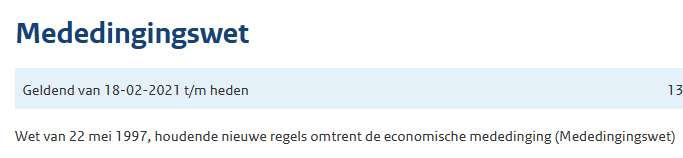

BesluitKlassiek
Om een RegelingKlassiek (initieel) bekend te maken wordt in het klassieke model altijd een BesluitKlassiek gebruikt. Een BesluitKlassiek zelf wordt niet geconsolideerd; onderdelen van de inhoud van het BesluitKlassiek kunnen wél worden geconsolideerd. De details daarvan worden hieronder besproken.
Structuur BesluitKlassiek met initiële versie RegelingKlassiek
Het eenvoudigste voorbeeld van een BesluitKlassiek is de bekendmaking van de initiële versie van RegelingKlassiek. In dit geval wordt de bekend te maken versie van de RegelingKlassiek zoals gegeven op RegelingKlassiek in zijn geheel opgenomen binnen een BesluitKlassiek met FRBRWork bill X. Het "lichaam" van het BesluitKlassiek wordt gevormd door de RegelingKlassiek.

De invulling van het opschrift van BesluitKlassiek wijkt af van die van het opschrift van de RegelingKlassiek.
Bij de bekendmaking van een BesluitKlasiek zijn belangrijke gegevens als de ondertekenings- en bekendmakingsdatum bekend; deze kunnen worden ingevuld in de Sluiting van de RegelingKlassiek. De inwerkingtredingsbepaling is onderdeel van de RegelingKlassiek.
Een BesluitKlassiek kan optioneel ook eigen bijlagen en toelichtingen bevatten, in het diagram een toelichting op het besluit. Dergelijke bijlagen worden niet geconsolideerd.
Onderdelen van een BesluitKlassiek
Aanhef en sluiting
Een BesluitKlassiek heeft geen eigen aanhef en sluiting.
Besluitopschrift
Een BesluitKlassiek heeft wel een eigen opschrift, dat wellicht enigszins misleidend ook als met het XML-element RegelingOpschrift gecodeerd wordt. Op deze pagina wordt het "RegelingOpschrift van het BesluitKlassiek" aangeduid als "besluitopschrift".
| Opschrift van | Vulling | Voorbeeld |
|---|---|---|
BesluitKlassiek die een RegelingKlassiek met een citeertitelbepaling bekend maakt | Het besluitopschrift bevat de titel van de bekendmaking voor op officielebekendmakingen.nl. Aanwijzing 4.4 stelt dat het besluitopschrift (wat in de aanwijzing dus "het opschrift van de regeling wordt genoemd) aan het eind de citeertitel van de regeling tussen haakjes vermeldt. Volgens de modellenformulering van Aanwijzing 4.2 bevat het besluitopschrift altijd de datum waarop het besluit is ondertekend. | Wet van 22 mei 1997, houdende nieuwe regels omtrent de economische mededinging (Mededingingswet) |
BesluitKlassiek die een RegelingKlassiek zonder citeertitelbepaling bekend maakt | Aanwijzing 4.4 kan hier niet worden toegepast, dus alleen en 4.3 zijn van toepassing. Ook hier geldt Aanwijzing 4.2: het besluitopschrift bevat de datum waarop het besluit is ondertekend. |
Weergave van besluitopschrift
Omdat er bij de bekendmaking van een RegelingKlassiek de gehele regeling met opschrift wordt opgenomen binnen de bekendmakende BesluitKlassiek, zouden er op officielebekendmakingen.nl twee opeenvolgende opschriften worden getoond: het besluitopschrift gevolgd door het regelingopschrift. Om dit te voorkomen moet het regelingopschrift van de RegelingKlassiek bij bekendmaking op officielebekendmakingen.nl worden onderdrukt. Bij de consolidaties op wetten.nl wordt dit opschrift uiteraard wel getoond.
In de huidige praktijk van wetten.nl wordt het besluitopschrift van het BesluitKlassiek dat de initiële regeling bekendmaakt onder het RegelingOpschrift van alle versies van de geconsolideerde regeling getoond. Dit geldt ook voor wijzigings-RegelingKlassiek met zelfstandige bepalingen. Een voorbeeld is de Mededingingswet
